This is personal study note
Copyright and original reference:
https://www.youtube.com/watch?v=_ODY0tQwTe8&list=PLVsNizTWUw7HhYtI-4GGmlJ5yxNdwNI_X
================================================================================
In database, there are other components aside from table,
such as, index, stored procedure, trigger, function, cursor, etc
================================================================================
Create table
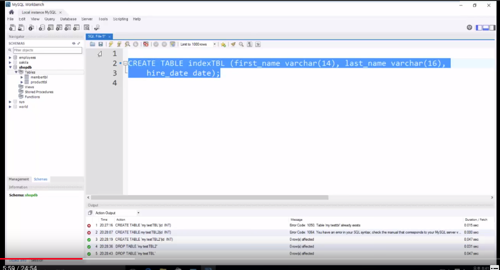
================================================================================
Insert data into table (indexTBL) by using data from emplyees (db) employees (table)
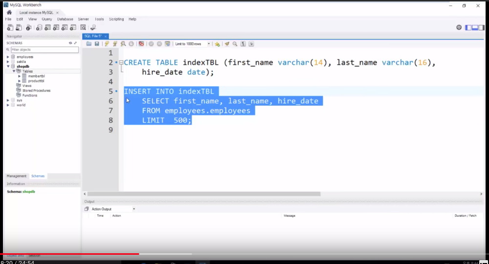
================================================================================
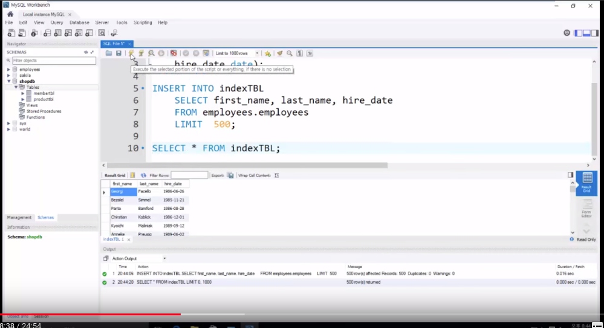
================================================================================
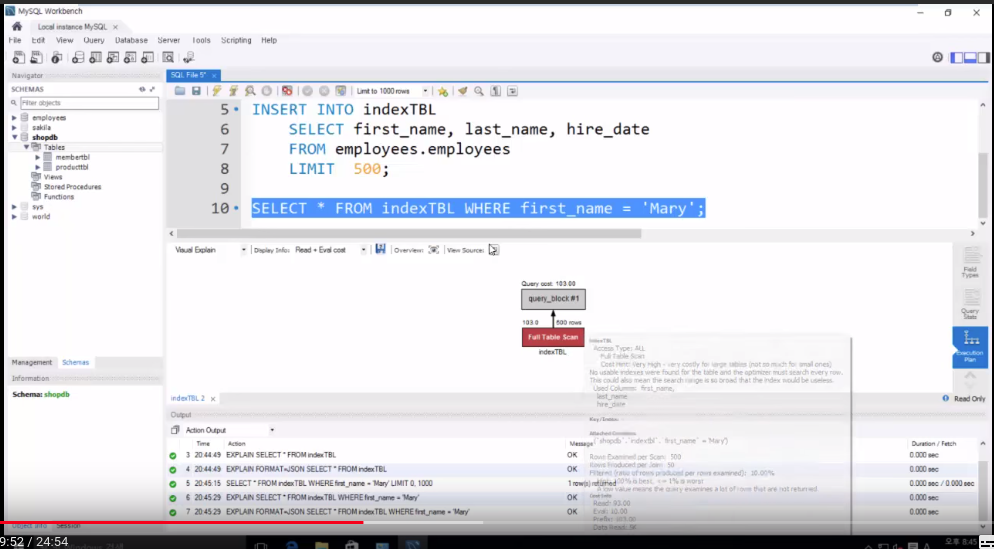
When you use WHERE, search is done by "full table scan"
"full table scan" means that if there is 500 records, 500 records are searched to find one queried record
================================================================================
Create index with respect to indexTBL.first_name
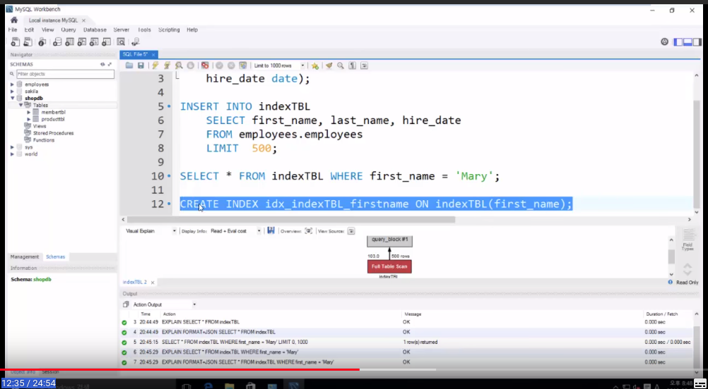
Run select again
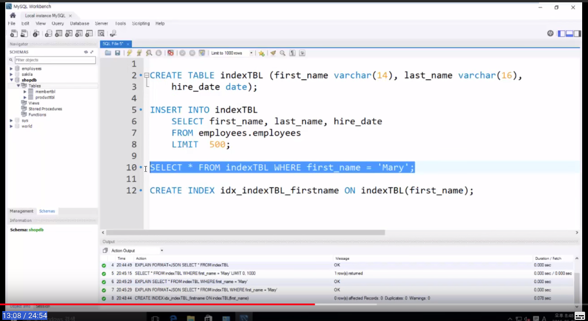
Non-unique key lookup (by using index)
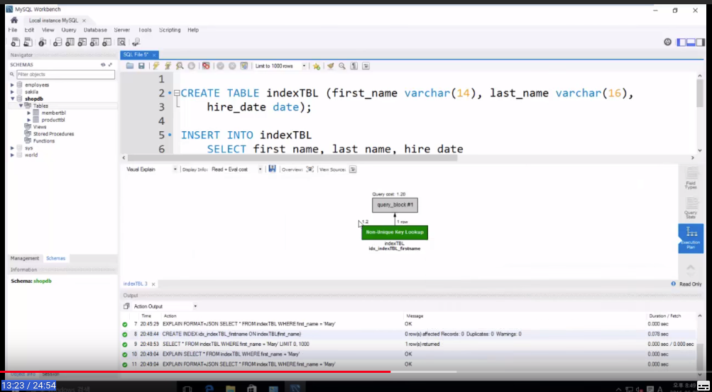
================================================================================
View: virtual table
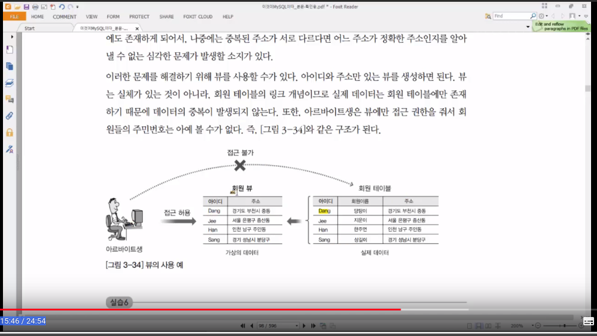
================================================================================
Create view with respect to memberTBL
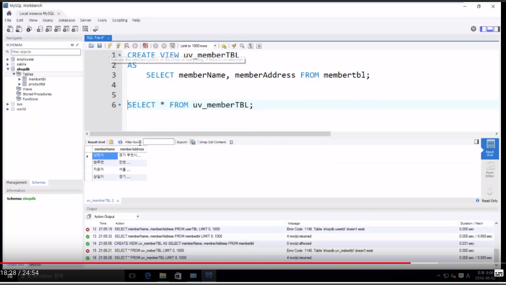
Actually, when part time worker runs
SELECT * FROM uv_memberTBL;
following statement is executed
SELECT memberName, memberAddress FROM memberTBL;
================================================================================
Stored procedure
Programming functions in MySQL
================================================================================
Run 2 statements
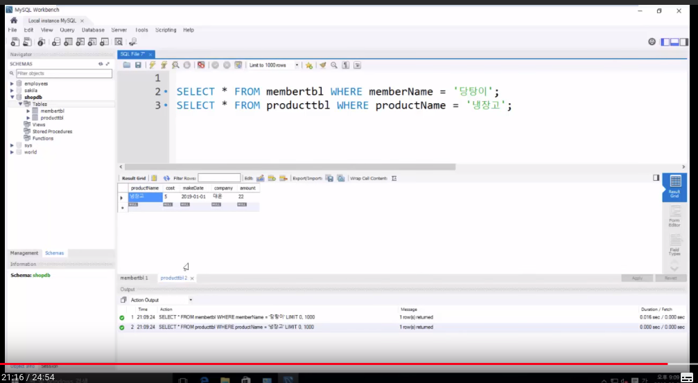
================================================================================
Create stored procedure
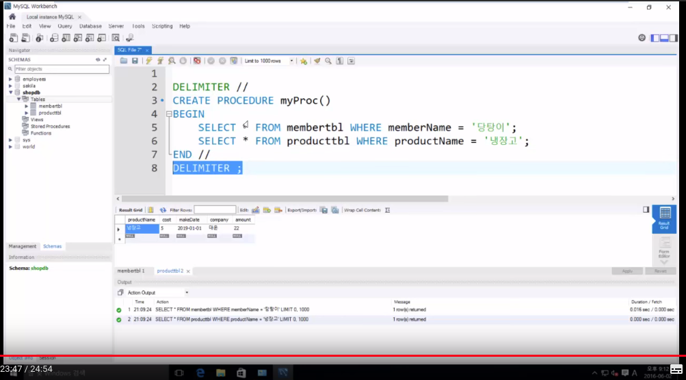
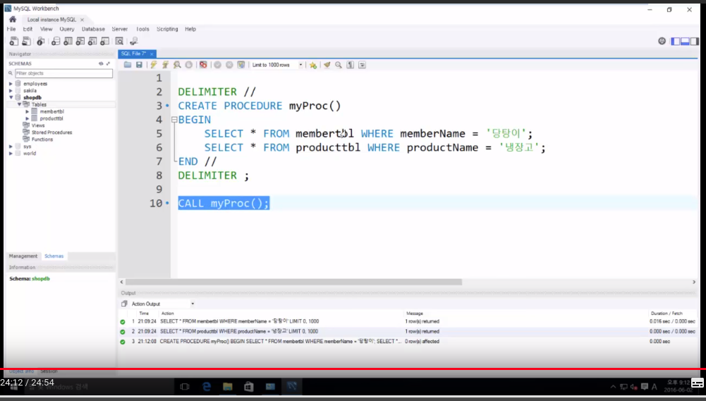